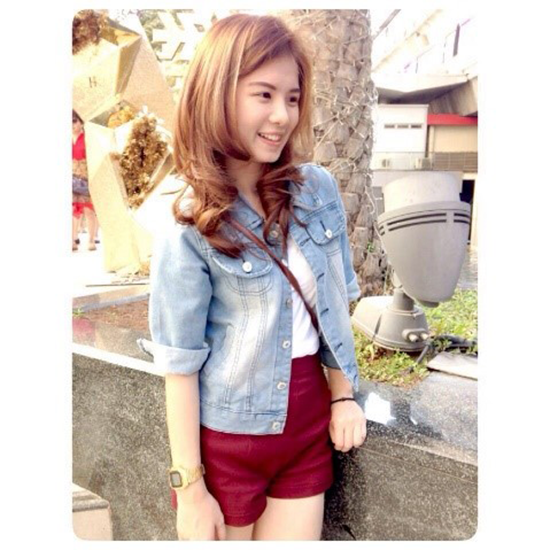

---------- ----------- ---- ---------- ------------- --------------- ------- ------------ ------------ -------------------------------- -------------------------- -------------------------------- ------------------ -------------------- --------------- -------------- ------------ ------------ ----------- ---------------------- ---------
Agent Business Unit
สิ่งที่ได้รับจากการผึกงาน : ได้เรียนรู้การทำงานร่วมกับผู้อื่น ซึ่งการทำงานก็ฝึกให้รู้จักความอดทน และได้รู้จักการเข้าสังคมและการวางตัวที่ดีมากขึ้น อีกทั้งยังได้เรียนรู้ได้เรียนรู้การออก/ต่ออายุกรมธรรม์แต่ละประเภท และได้เรียนรู้การทำงานในบริษัทจริง ทำให้ได้มีโอกาสสัมผัสกับระบบงานที่ไม่รู้จักมาก่อน ความรู้สึกดีๆ : จากการสัมผัสในการฝึกงานครั้งนี้ พบว่าพี่ๆให้การต้อนรับเป็นอย่างดี มีมนุษยสัมพันธ์ที่ดี ทำให้สามารถปฏิบัติงานได้อย่างมีประสิทธิภาพ ส่วนพี่เลี้ยงก็ให้คำแนะนำกับนักศึกษาฝึกงานและสามารถปรึกษาหารือกันได้
ทันญ์นพัช รุ่งวิไลเจริญ (อุ้ม) คณะวิทยาศาสตร์ สาขา:วิชา คณิตศาสตร์ มหาวิทยาลัยเทคโนโลยีพระจอมเกล้าธนบุรี
สิ่งที่ได้รับ : ได้รู้จักเพื่อนใหม่ต่างสถาบัน ซึ่งถือเป็นการสร้าง connection ไว้ใช้ในอนาคต ได้ประสบการณ์ที่จะนำไปเป้นแนวทางในการทำงานในอนาคต เพราะก่อนจะมาฝึกงานยังนึกภาพไม่ออกว่าการทำงานในสาขาวิชาประกันภัยเป้นลักษณะไหน แต่พอได้มาฝึกงานจึงได้เรียนรู้แนวทางเกี่ยวกับอาชีพในสาขาวิชาประกันภัยมากยิ่งขึ้น ความรู้สึกต่อพี่ๆ : รู้สึกขอบคุณพี่ๆทุกคน เพราะพี่ๆดูแลดีมาก และให้การต้อนรับอย่างอบอุ่น คอยแนะนำ และสอนงานทำให้ได้รับความรู้ใหม่ๆเยอะมากๆ

มนิสา เที่ยงธรรม (ยีนส์) คณะบริหารธุรกิจ สาขา : การประกันภัย มหาวิทยาลัยอัสสัมชัญ
สิ่งที่ได้รับ : ได้เรียนรู้ในการทำงานจริงของฝ่ายผู้พิจารณารับประกัน ได้รู้จักเพื่อนใหม่ต่างสถาบัน ความรู้สึกต่อพี่ๆทำงาน : รู้สึกดีมากที่ครั้งหนึ่งได้มาร่วมงานกับพี่ๆ พี่ๆให้ประสบการณ์ในการทำงาน ให้การต้อนรับเป็นอย่างดี ทุกๆวันระหว่างการทำงานพี่ๆดูแลให้ความสนใจเหมือนพวกเราคือพนักงานคนหนึ่งหรือทีมงานของพี่ๆ ถึงแม้ว่าอายุเราจะห่างกันเยอะแต่เราก็อยู่แบบพี่แบบน้อง อบอุ่นมาก ขอบคุณครับ

เทวินทร์ ยินดี (ปอ) คณะพาณิชยศาสตร์และการจัดการ สาขา : การประกันภัยและการจัดการความเสี่ยง มหาวิทยาลัยสงขลานครินทร์ วิทยาเขตตรัง